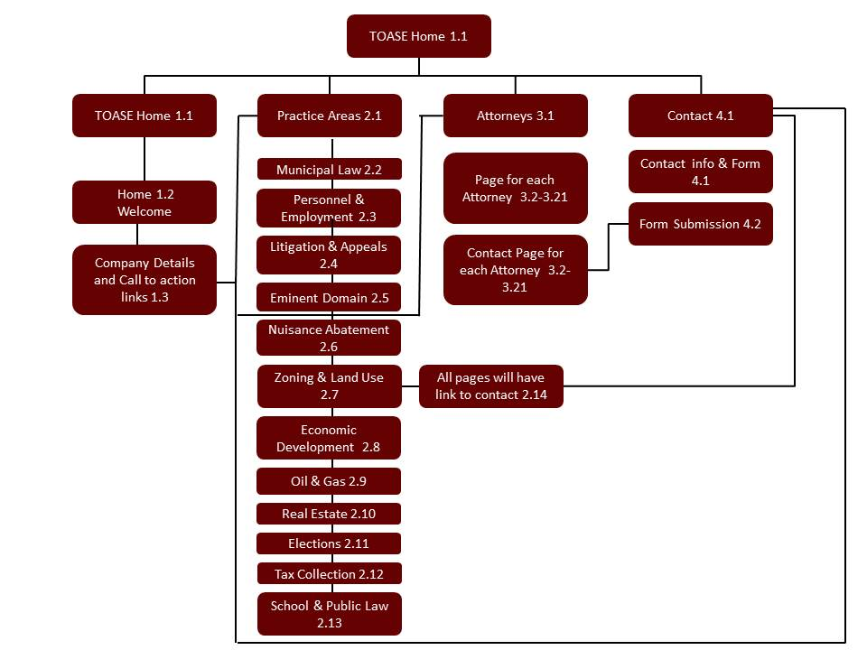
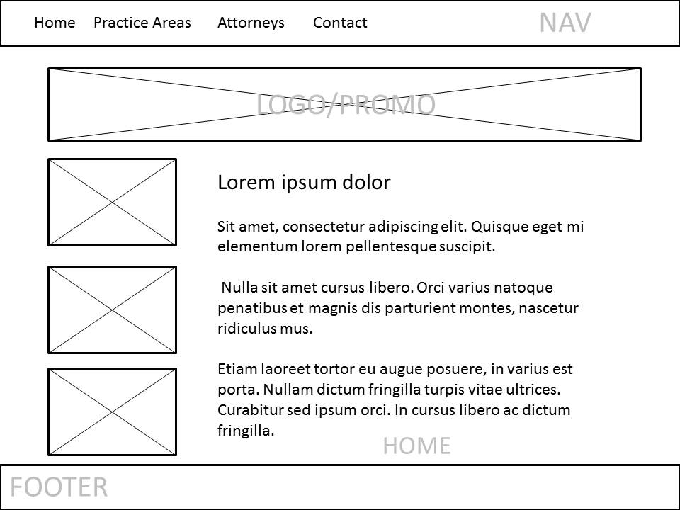

Project Log
| Task | Uncompleted | In Progress | Completed | Date | Time Log |
|---|---|---|---|---|---|
| Project Proposal | 3/10/17 | 3 hours | |||
| Information Design | 3/10/17 | 2 hours | |||
| Visual Design | 3/26/17 | 3 hours | |||
| Multimedia Production | 3/26/17 | 1 hour | |||
| Front End Development | 4/30/17 | 5 hours | |||
| Back End Development | 4/30/17 | 2 hours | |||
| Usability Testing | 4/30/17 | 1 hour | |||
| Last Upated 4/30/17 |
Communication Brief
Project Summary:
TOASE website redesign, the website was last updated in 2011; the website at the time was not designed for mobile devices. My goal with this redesign is to give the current website and updated and classic look that will flow from large desktop to cell phones. My second goal with this site is to streamline and organize the pre-existing content and remove unnecessary content. By doing these current and prospective clients will be able to find the information they are looking for more easily.
The ultimate goal for this redesign is to create a long term internet marketing asset for TOASE. This site will allow TOASE to communicate easily with current and prospective clients and also allow them to keep up with and be engaged with TOASE. This redesign will also serve to communicate the professional and elite brand image of TOASE.
Audience Analysis
Audience A is a city council, mayor, manger looking for a city attorney to represent their city as general counsel.
Audience B is a school district or superintendent looking for an attorney to represent their district as general counsel.
Audience C is a real estate company executive that is looking for an attorney to represent them in contract negotiations, property development projects, and eminent domain actions.
Audience D is a head of human resources needing legal advice and general counsel for their company.
These audiences will all be located within the DFW Area. Most of their online activities will be business related. These audiences will spend little time surfing the web but will spend a decent amount of time researching for company projects.
Typically this type of visitor will want to quickly find general information about TOASE then if interested in more information will want to quickly find the area of the website they are looking for.
These audiences will care about the reputation and the expertise of TOASE they will want to see proof that TOASE is hard working and reliable attorney. They might visit the website if they are seeking general information. Would like to learn more detailed information about TOASE, or if they are interested in finding contact information for TOASE.
Perception / tone / guidelines
The current audience feels like the website is somewhat outdated but feels that the information is what they are really after. We want the target audiences’ to get the information they need and have a cleaner user experience.
The website should meet these visual goals:
- A clean but classic user interface.
- A consistent visual theme from page to page.
- An engaging interface that encourages users to seek the services of TOASE.
Communication Strategy
TOASE will need to meet these communication goals in order to enhance the user experience on their website.
- Maintain a website and digital online presence that engages its target audience.
- Maintain a website and digital online presence that communicates a reliable and efficient service for its clients.
- Create social media accounts that will drive users to the website or allow them to gain access to desired information.
- Success will be measured by analyzing website traffic and any increase in traffic at this time will be considered a success.
Competitive Positioning
TOASE provides its clients with exceptional service and has a wide range of law experience that allows it to better serve its clients. This expertise will be displayed in the website and will draw new clients to TOASE.
Targeted Message
The site will better and improve the knowledge that the target audience will have of TOASE as well as provide an exceptional user experience for TOASE site visitors.
Dynamic Features
Online Contact Form – The user will fill out and submit a form requesting information from TOASE. They would need to supply their name and email address and a brief message regarding their interest in TOASE.
The reason I chose this feature is because the primary goal of this website is to be an informational tool for TOASE clients. If the client has a question they can simply email TOASE from the website then TOASE will be able to get back to them. I will be using JavaScript to validate information in the browser and PHP and MySQL to submit the information into a database.
Backend for TOASE – this feature will allow TOASE to log in and review the questions they have received from clients and potential clients. The reason I chose this feature is because TOASE needs a way to organize and respond to the requests for information they receive on the website, I will use MySQL and PHP to build this back end part of the website.
Site Map
Wireframe
Visual Design Guide
Usability Report
Purpose and Scope:
The user will be testing the ease of usability and finding information that is needed on the site. The test will exam how easily users can find desired information, as well as the ability to find and submit an inquiry form. The test will monitor the users path to each requested item and how long it take them to get there.
This test will also be conducted on TOASE employees to see how easily they can log into the backend TOASE website and review client inquiry forms.
Participants:
30-50 year old potential clients
Members of the TOASE Organization
Scenarios:
| Task | Usability issues | Severity | Find information about an Attorney | Find Information about an area of practice | Submit an inquiry asking for more information about TOASE | Notes |
|---|---|---|---|---|---|---|
| Ben | None | 1 | Found Attorneys Page and found found needed information | Naivated to practice areas and found Litigation and Appeals section | Was able to submit a form asking for more detailed information | Was able to complete tasks with little to no difficulty. Completed in 5 minutes |
| Shara | None | 0 | Found Attorneys Page and found found needed information | Naivated to practice areas and found oil and gas section | Was able to submit a form asking for more detailed information | Was able to complete tasks with no difficulty. Completed in 3 minutes |
| David | None | 0 | Found Attorneys Page and found found needed information | Naivated to practice areas and found Elections section | Was able to submit a form asking for more detailed information | Was able to complete tasks with no difficulty. Completed 4 minutes |